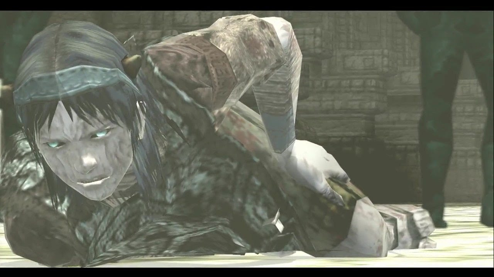
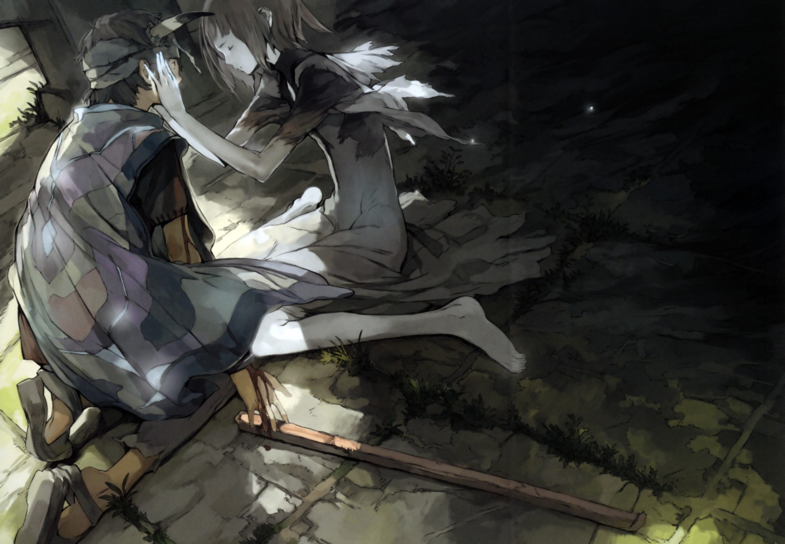
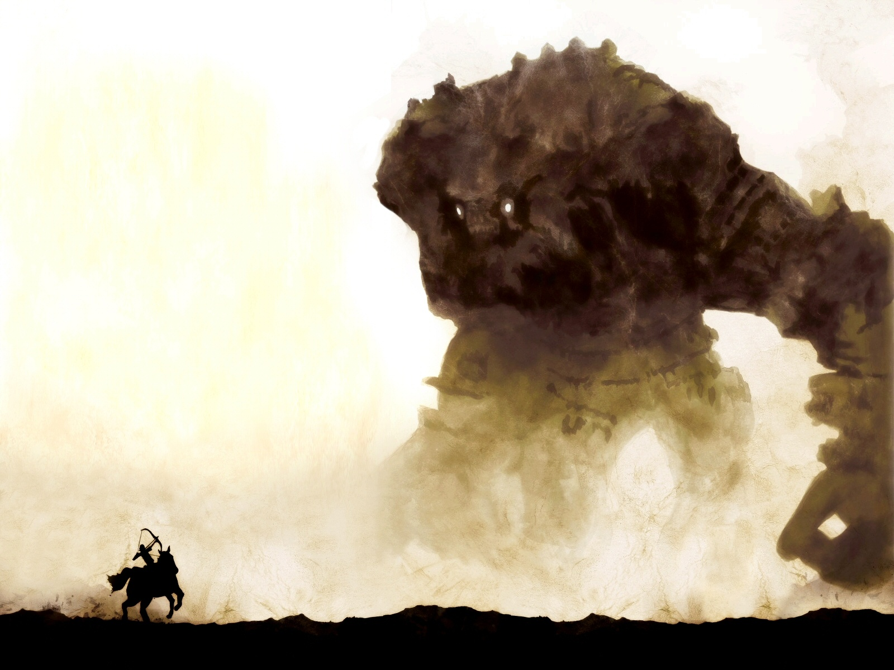
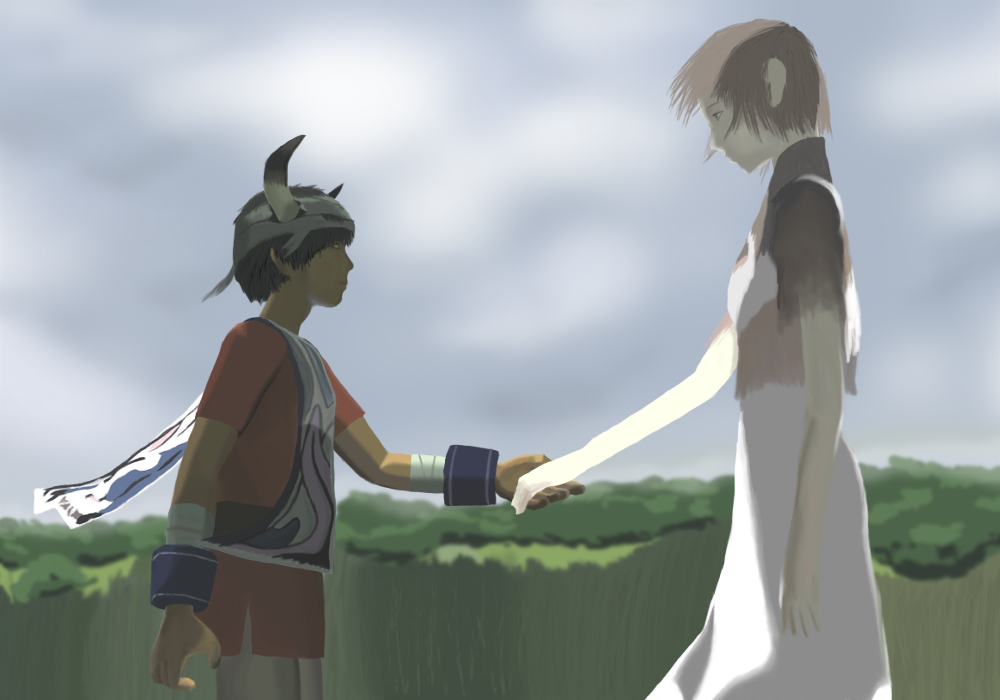

Shadow Of The Colossus
Shadow of the Colossus (2005) e ICO (2001) são games que apresentam uma jornada emocional, eles são a própria proeza épica. Combinando opostos como mundos minimalistas e histórias que podem ser discutidas loquazmente, a magnitude deles vai além dos Colossus (embora os gigantes também possam ser considerados épicos). O que há de mais grandioso é intensidade que os jogos causaram nos jogadores. Talvez até possamos dizer que o propósito dos títulos, além de divertir claro, é de causar meditação, reflexão, e isso é geralmente o que acontece com o gamer que embarca nos jogos sem saber da complexidade das questões colocadas nas respectivas narrativas.
Para que possamos nos debruçar em uma análise das conexões entre os games e falar de magia, sacrifício e chifres, que tal um pequeno resumo dos roteiros? Shadow of the Colossus é uma prequela de ICO, e conta a história de Wander na Região Proibida, que deve usar uma espada lendária para trazer sua amada de volta à vida. A voz de uma entidade sem corpo conhecida como Dormin é quem guia o aventureiro a exterminar criaturas gigantescas chamadas Colossus. A cada novo abate, Wander fica mais pálido e ganha cicatrizes. Após a morte do décimo segundo Colosso, ele passa a ser perseguido por um xamã, Lorde Emon, e seu grupo de combatentes. Aparentemente, os novos antagonistas acreditam que Wander está possuído. Tudo isso porque um chifre apareceu na fronte do cavaleiro.

"Não olhe agora, amigo, mas tem algo crescendo na sua cabeça"
Com todos os gigantes mortos, e Wander abatido pelas forças de Emon, o corpo do protagonista se transforma em uma carcaça que o espírito de Dormin pode se aproveitar. Pois não é que os Colossus carregavam neles parcelas fragmentadas do espírito de Dormin? E o verdadeiro vilão, agora livre, tenta recuperar o tempo perdido. Ele é parado apenas porque Emon usa a espada de Wander em uma piscina de águas mágicas. Quando Mono, a donzela, acorda, ela vê apenas um bebê com chifres. Do outro lado da terra, o xamã tem a esperança de que Wander possa ter sobrevivido, para que ele possa se redimir do seu sacrilégio.
Ico tem Wander como antepassado. É um menino com chifres, que é abandonado em um sarcófago dentro da cripta de um castelo. Para os conterrâneos de Ico, os chifres não são um bom sinal. Ao sair da cripta e explorar o novo território, o protagonista encontra-se com Yorda, uma menina presa em uma jaula. Ico a liberta, mas ela passa a ser perseguida por sombras -- são as almas das outras crianças com chifres que tiveram um final menos feliz que Ico. Os novos amigos não conseguem sair do castelo, sua dona, a rainha e mãe de Yorda, informa que a menina tem um propósito: a rainha usaria seu corpo para prolongar sua vida. Ico ganha a batalha, mas perde os chifres e, alguns dizem, também sua vida.

"Ico e Yorda, uma saga de sofrimento"
Luz e Sombra
A primeira coisa que me chama a atenção é um tratamento entre pagão e cristão dado para os personagens e a simbologia. Dormin, por exemplo, é Nimrod ao contrário. Na Bíblia, o rei Nimrod seria o responsável por criar a torre de Babel, e reinar à custa da felicidade de saúde de seus súditos. Ao mesmo tempo, o herói do sagrado, Lord Emon, é versado em xamanismo, o que não é necessariamente cristão. Então, temos um vilão que pode ter sido influenciado pelo judaísmo e cristianismo, enquanto as forças que vêm para combatê-lo são pagãs. Os opostos que falei lá em cima não são apenas artísticos ou de gameplay, e parecem um tema que perpassa toda a narrativa dos jogos.
O corpo também é dividido entre aquele que existe sem matéria e quer ter matéria, e aquele que existe como matéria mas é atraído por algo além da matéria. Wander quer Mono de volta a vida. Ico enfrenta criaturas-sombra. Também é interessante notar que aqueles que não têm corpo se manifestam de alguma forma no mundo físico, seja via símbolos encravados em estátuas ou espadas, seja com humanoides sombras (em Shadow of the Colossus, eles são chamados de Dark Beings). Podemos até imaginar que parte dos Colossus e de Yorda também são representações físicas daqueles que querem fazer mal, ou, de certa forma, uma continuação dos mesmos.

"O mal pode ter formas grandiosas em Shadow of the Colossus – mas as aparências enganam."
O fato de haverem sombras em ambos os games também pode significar que a essência mágica é a mesma. Assim como existe uma dissociação entre as forças do bem e as forças do mal, há magia de luz, e de sombras. Enquanto a magia negra fica sempre aparente nos oponentes, especialmente em Dormin e na rainha que têm poderes similares (como expressar-se sem corpo em seus domínios e habitar o corpo dos outros), a magia branca tende a ser representada como feixes de luz. Mas, se pensarmos bem, não é somente assim: tanto Colossus quanto criaturas-sombra têm sua parcela de magia branca, que parece se libertar quando são mortos, além de todos os símbolos que aparecem durante SotC -- mas falar deles é tarefa para um novo texto. Wander e Ico são as personificações dessas duas forças contraditórias. Enquanto Wander começa como um ser de aparente luz e se perde para as sombras, Ico começa marcado pelas sombras e evolui para resolver o conflito entre luz e sombra.
Vivemos em um mundo dual. Shadow of the Colossus e ICO nos lembram disso. Nesse caso, nem as crianças estão a salvo. Por mais que elas possam representam um tipo de esperança e novo começo (são a própria potência para criar novas memórias e novos atos), algum tempo depois, mesmo as crianças que podem redimir seus chifres são abandonadas à própria sorte. Ou à morte. Provavelmente, a maior simbologia para expressar o tal dualismo são os chifres.

Os chifres em ICO representam o dualismo da existência.